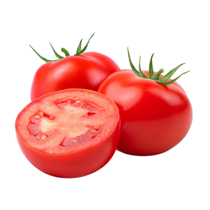

Domaći kečap je jednostavan umak koji možemo pripremiti s nekoliko svježih rajčica i nekoliko osnovnih načina
Najbolji rezultat dobit ćemo ako koristimo zrele i mesnate rajčice
Za kečap su odlične mesnate sorte poput Roma i San Marzano i sortu Volovsko srce, ali će tada umak možda trebati nešto duže kuhati

Više informacija o pripremi možete pronaći na internetu
Dobar kečap treba imati izražen okus rajčice, odgovarajuću gustoću i uravnotežen odnos slatkog i kiselog okusa.
Recept je prilagođen za približno 2 kg rajčice. Temperatura kuhanja ne mora biti visoka, važnije je postupno isparavanje vode
Za osnovni omjer možemo koristiti:
2kg rajčice + 50 ml octa + 2 žlice šećera
Kiselost možemo izraziti pomoću pH vrijednosti: pH manje od 45
Kod nekihrecepata koristi se i omjer soli od približno 1% ukupne mase sastojaka
Domaći recept za kečap preporučuje potpuno kuhanje kako bi se dobila odgovarajuća gustoća
Ako želite jači okus, možete dodati malo čilija
Ako želite blaži kečap, smanjite količinu octa i začina